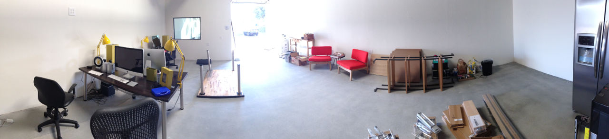
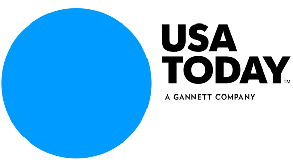
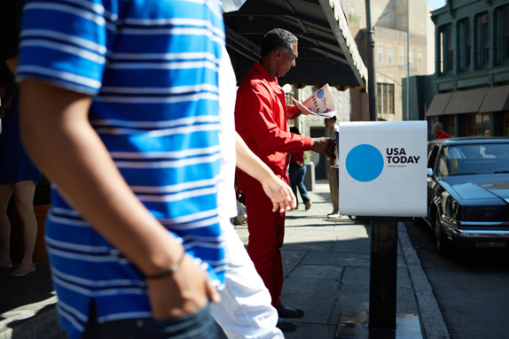
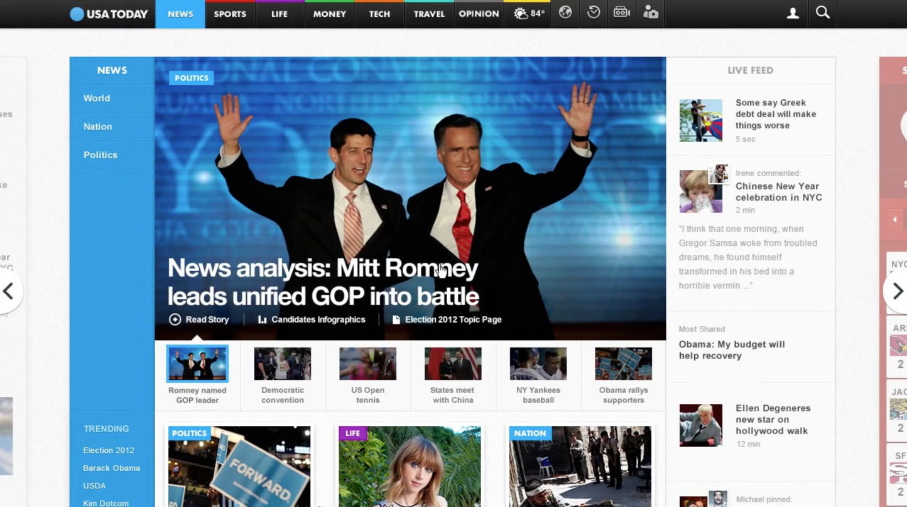
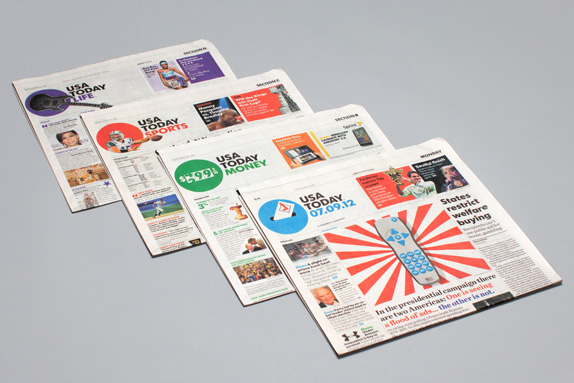
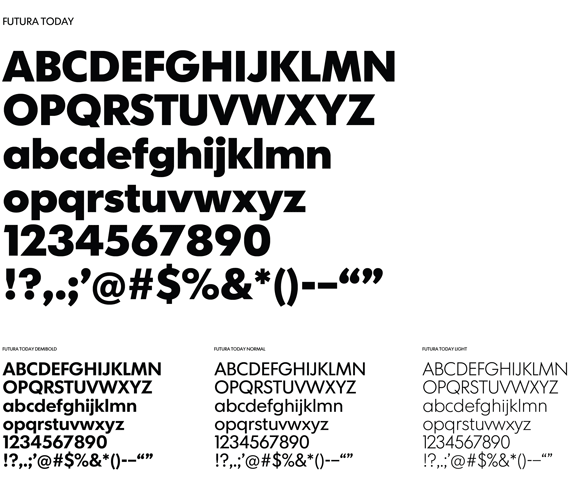
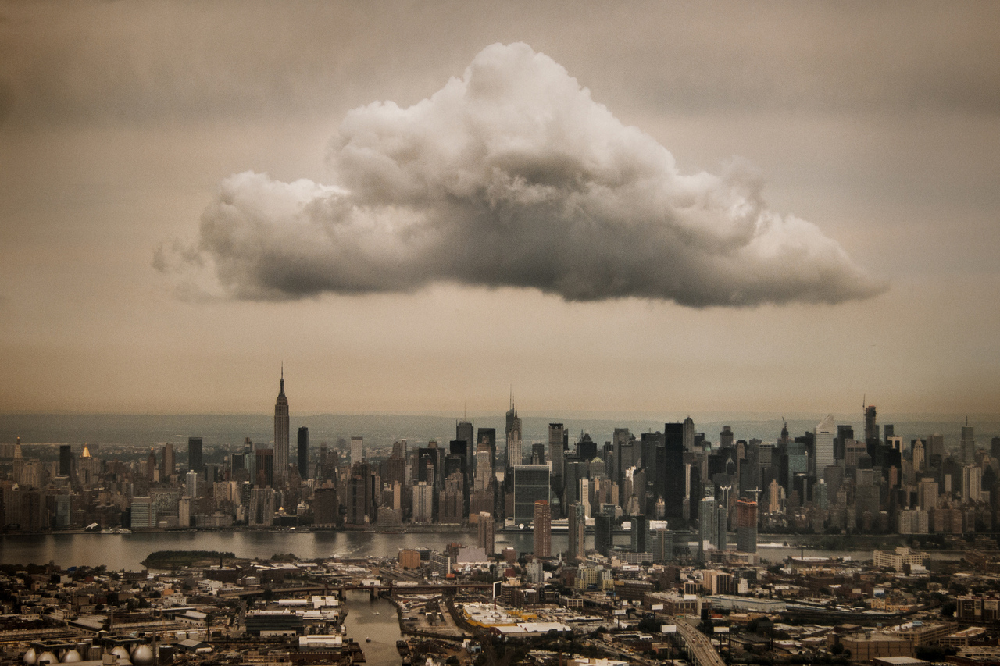

September 2012
09/24/2012 13:19:30
¶
●

I’m excited to be in our new space for Style Hatch. We have a lot of work ahead of us with our new Turnstone desks being delivered today, a kitchen to install, and a mountain of wood for our design and build out.
We have some fresh new themes for Tumblr in the works—unlike anything else we’ve launched. Beyond themes we are evolving Style Hatch to give people the tools, resources and designs to express their creativity and genius online.
It feels good to have a fresh start, full of vision and excitement for what’s ahead.
#style hatch #office #panorama
09/19/2012 21:33:18
¶
●
Hand Lettering “Subterranean Homesick Blues”
Inspired by Bob Dylan´s Subterranean Homesick Blues video, Leandro Senna hand lettered every word of the song. Over the course of a month 66 cards were created using only pencil, black tint pens and brushes—no computers or retouching.
See more of the process behind the lettering on Leandro’s blog.
#design #illustration #typography #music
09/19/2012 21:20:16
¶
●

“It’s not about the amount of wealth you can accumulate, it’s about the impact and change you can create.” —Neil Blumenthal
#good #ideas
09/19/2012 21:17:35
¶
●
Often I find myself chasing “success” in order to find happiness with my work. Even though I know that the pursuing success or fulfillment in work does not lead to happiness. With that frame of mind happiness will always be an elusive goal. I’ll be happy when… I land that client, hit this milestone, get that recognition.
As I am preparing for my session at Circles Conference, Shawn Anchor’s TED talk on The Happy Secret to Better Work is a perfect reminder to reframe my around thinking around happiness and success. It’s not our reality that shapes us, but the lens through which we view our reality.
#success #ted #happiness
09/18/2012 16:08:02
¶
●





USA TODAY Refreshed
Early this week Wolff Olins revealed a complete multi-platform rebranding and design of USA Today. The simplified and dynamic logo works well as you transition between the sections of the newspaper.
The new site that goes along with the refresh, beta.usatoday.com, feels both fresh and modern. They took some huge risks by trying out unique UX design approaches, but I imagine it will encourage people to spend more time ‘browsing’ through the news.
Follow Wolff Olins on Tumblr
#design #ux #branding #news
09/11/2012 15:39:00
¶
●
Introducing Society Premium Theme
I am extremely excited to finally launch our newest premium Tumblr theme, Society! This theme was a personal labor of love where I poured a lot of time into the design and the build.
The layout features a fully responsive and elastic grid that stretches and fills the grid to your window. In order to keep the theme lightning fast, I added a lightbox style post viewer that loads in the high resolution posts. As you browse from post to post an HTML5 call is triggered to update the address bar. When you rollover the posts in the grid, you have a quick option to like or reblog each post. Like always, the theme also features a custom iPad and iPhone optimized layout.
To top it off the customization options allow you to tweak every color you see in the theme. As a demonstration of the options, check out the alternate dark Society demo site.
Starting today you can purchase Society on Tumblr for $49. Let us know what you think at society@stylehatch.co or @stylehatch!
#featured #style hatch #premium themes
09/10/2012 12:23:00
¶
●

Midtown Cloud
“I snapped this from the window seat as my plane was approaching LaGuardia Airport. The cloud is over Manhattan, while Brooklyn and Queens are visibile in the foreground, separated by Newtown Creek.”
Captured by Jeff Weston
#photography #landscape #nyc
09/06/2012 12:08:00
¶
●
Hyper-Matrix Kinetic Wall
Designed by the media artist group J o n p a s a n g, the Hyper-Matrix combines hundreds of controllable surfaces to create an impressive effect for Hyundai Motor Group’s 2012 Yeosu EXPO. Watching the making of video, I can’t begin to image how much this wall cost to build and manufacture.
Found on The Fox Is Black
#art #installation #cars
09/05/2012 10:00:30
¶
●
Discovery consists of seeing what everyone has seen and thinking what nobody has thought.
Albert Szent-Györgyi
#ideas
09/05/2012 09:05:44
¶
●
Hop on the nostalgia train for a second. Think back to the 90s. To Nirvana, Linklater’s Slacker, and the flannel-clad rebels on the run from the 80s. To skateboards and graffiti and toe rings and VHS tapes. Things were messy then. And type design was messy, too. Words were splayed and chaotic, letters blurred. Textures were thick and heavy. Concert posters looked like someone had splattered paint on paper and then scratched out band names. You may have noticed it, you may not have, but at its peak, this typography style, called grunge, was ubiquitous.
It was everywhere—and then it wasn’t.
Perhaps it’s time for designers to explore the style again with a modern twist. The era of perfectly polished pixels, structures and form needs a challenger to shake things up.
#design #Typography #grunge
Index